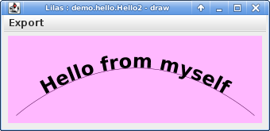

- 2.1.2 -
demo.hello.Hello2
What about using a nice graphic window for the message ? This
can be done by adding one or many graphic interfaces in the module definition by the way of the awt element.
Hello2.lilas : <?xml version="1.0" encoding="UTF-8"?>
<module>
<signal mode="in" name="sender" sensitive="true" type="java.lang.String"/>
<signal mode="internal" name="msg" type="java.lang.String"/>
<code language="java"/>
<awt name="draw">
<ImageSVG img="demo.hello.HelloDraw">
<ElementSVG idRef="msgHello" signal="msg"/>
</ImageSVG>
</awt>
<awt name="drawInput" layout="border">
<center>
<instance awt="draw"/>
</center>
<page_end>
<Text signal="sender" taille="12" label="sender :" editable="true"/>
</page_end>
</awt>
</module>
Here we define a first graphic interface with the name draw with a single svg image
(file /demo/hello/HellowDraw.svg). The
svg element with id msgHello of this drawing is associated to the signalmsg and
will display the value which appears on it.
A second graphic interface with the name drawInput use the first one and a java.swing.JTextField component
use to modify the value on sender signal.
As we did for module Hello, whe modify the activation method of the generated java file
demo/hello/Hello2.java :
Hello2.java : package demo.hello;
public class Hello2 extends Hello2_LILAS
{
public Hello2(String nomDansModuleParent, lilas.base.Module parent,
lilas.base.Signal<java.lang.String> sender_signal) throws lilas.base.ExceptionLilas {
super(nomDansModuleParent, parent,
sender_signal);
msg_port.propagate=lilas.base.Port.Propagate.PERMANENT;
}
@Override
final protected void activation() throws lilas.base.ExceptionLilas {
msg = "Hello"+((sender==null)?"":" from "+sender);
}
}
Here, msg_port.propagate=lilas.base.Port.Propagate.PERMANENT; means that the signal msg will be initialise
after each activation during the postactivation phase of the module.
Now, launching this module with a value of input signal give :
$ lilas /demo/hello/Hello2.lilas -awt=draw sender=myself
Lilas ready !
with the window :

If we choose the second graphic definition on the command line, we obtain :
$ lilas /demo/hello/Hello2.lilas -awt=drawInput sender=myself
Lilas ready !
with the window :
but now, we can change the value of the sender anytime, the drawed text follow automatically the input.
The module can also be run via LILAS Main java.awt.Frame (in that case, all the defined awt appears in a swing JComboBox).
{kind=link}